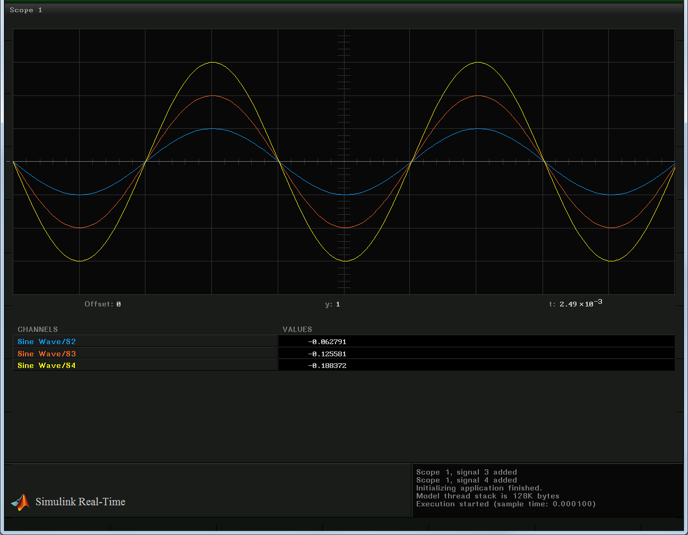

IO301 Model synchronization with external interrupt source
This demo shows how to use an external interrupt source to synchronize the entire real-time application with your hardware. The external interrupt line of the IO301 I/O module is used to trigger the model execution. The required external synchronization signal is generated through a PWM trigger output of the same IO301 I/O module.
Contents
Requirements
- Simulink Real-Time™
- Speedgoat Real-time target machine with IO301 installed
- Terminal board with demo wiring connected to the IO301
Terminal board demo wiring
Connect the provided terminal board to the Speedgoat IO301 as follows:
| From pin | Description | To pin | Description |
| 3 | PWM1 - Trigger signal | 25 | Interrupt input |
Parameters
As the model will run synchronized with the PWM, the PWM period will also define the sample time of the model.
fpga_freq = 33e6; % FPGA frequency = 33MHz Tpwm = 100e-6; % PWM period = 100 microsecond
Open, Build and Download the Simulink model to the Speedgoat Real time target machine
Click here to open the Simulink model IO301interruptsynch.
% Open the model open_system('IO301interruptsynch'); % Build the model and download to the target computer set_param('IO301interruptsynch','RTWVerbose','off'); % Configure for non-verbose build rtwbuild('IO301interruptsynch'); % Build and download application
### Starting Simulink Real-Time build procedure for model: IO301interruptsynch Warning: This model contains blocks that do not handle sample time changes at runtime. To avoid incorrect results, only change the sample time in the original model, then rebuild the model. ### Successful completion of build procedure for model: IO301interruptsynch ### Looking for target: TargetPC1 ### Download model onto target: TargetPC1
Start and run the model
% Using the Simulink Real-Time object variables tg, start the model execution start(tg); % Start the application pause(5); % Wait for 1 second
Display the target screenshot
try tg.viewTargetScreen; % This command replaces xpctargetspy from R2014a catch xpctargetspy; % Legacy command for xPC Target end